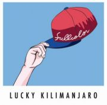

Lucky Kilimanjaro / 1st Mini Album [FULLCOLOR] 2015.7.22 ON SALE!

あなたが踊れるダンスミュージックを
あなたが歌えるポップミュージックを
極上のエレクトロミュージックをお届け
7月22日デビュー作 堂々リリース！！
<収録曲>
1.「Super Star」
2.「Magical Gravity」
3.「Let Just One More Kiss」
4.「Burning Friday Night」
5.「Faking Love」
6.「Call Me Baby」
DLCR-15071 / 定価:¥1,320(税込)